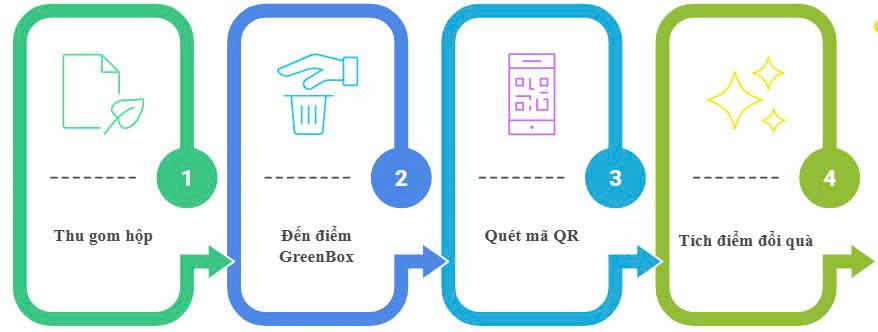

GreenBox – Giải pháp thu hồi & tái sử dụng hộp carton tại Cần Thơ
Trong những năm gần đây, thương mại điện tử tại Việt Nam phát triển mạnh mẽ. Theo Statista (2024), ngành này đạt 20,5 tỷ USD vào năm 2023, duy trì tốc độ tăng trưởng trung bình 20%/năm. Song song với sự tăng trưởng này, lượng bao bì giấy và carton thải ra cũng tăng nhanh, gây áp lực lớn lên hệ thống thu gom và xử lý rác. Bộ Tài nguyên & Môi trường (2022) cho biết bao bì giấy, carton chiếm 17% tổng rác thải rắn đô thị – một con số đáng báo động.

Riêng tại Cần Thơ – thành phố với gần 1,3 triệu dân, mỗi tháng ước tính phát sinh hàng chục nghìn hộp carton từ các đơn hàng online, siêu thị và cửa hàng bán lẻ. Tuy nhiên, toàn thành phố chỉ có khoảng 3–8 doanh nghiệp và 20–70 cơ sở nhỏ lẻ tham gia thu gom giấy, hoạt động chủ yếu theo cách thủ công và thiếu sự liên kết. Hệ quả là tỷ lệ tái sử dụng trực tiếp chỉ đạt 15–20%, còn lại bị nghiền thành bột giấy hoặc thải bỏ.
GreenBox ra đời
Dự án GreenBox được triển khai nhằm giải quyết những hạn chế trên. Điểm khác biệt của GreenBox là mô hình thu hồi – phân loại – tái sử dụng hộp carton kết hợp ứng dụng mã QR để theo dõi vòng đời sản phẩm. Người dùng khi trả lại hộp sẽ được tích điểm và đổi lấy quà tặng hay voucher mua sắm.

Cơ chế này không chỉ khuyến khích cộng đồng tham gia mà còn xây dựng được một hệ thống logistics xanh cho Cần Thơ.
Mục tiêu của GreenBox
- Nâng tỷ lệ tái sử dụng hộp carton lên 40–50% trong 3 năm.
- Giảm chi phí rác thải cho thành phố, ước tính tiết kiệm hàng tỷ đồng mỗi năm.
- Góp phần giảm phát thải CO₂: mỗi tấn giấy tái sử dụng giúp tiết kiệm ~17 cây xanh và 26.000 lít nước.

Với GreenBox, hộp carton không còn là “rác” mà trở thành nguồn tài nguyên tuần hoàn, mang lại lợi ích cho người dùng, doanh nghiệp và môi trường.